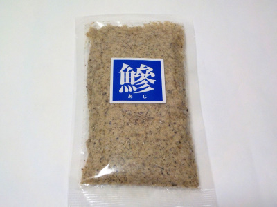

いいものを探そう ～出雲らへん～
島根県松江市嫁島町14-19
2024/02/05
松江塩干魚のあじ煮干粉末

アジの粉ってあるんですね。粉末ですが、香りも味もアジでした。
魚のクセがありますが、白身なので淡白だと思いました。ダシに使っていますが、ちょっと多めに入れた方が美味しいかなと思っています。
【松江塩干魚TOP】
【地域TOP】
【HPTOP】
【『松江市らへん』の他の情報はこちら】
【おいしいものを食べよう。】【たくさん寝よう。】
【ソロ活をしよう!】【季節感のあることをしよう。】【動画視聴はほどほどに。】【当サイトの全てのコンテンツは無断転載禁止です。】